Pentomino 日曆拼圖
每天一題，用 12 塊拼出今天日期，附求解器
每天一題，用 12 塊拼出今天日期，附求解器
單人、電腦對手，或最多 6 人連線對戰
跟 Stockfish 對下、解戰術題，還能分析自己的棋
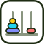
看遞迴自己玩，或看遞迴程式一行一行解
照順序連數字、走遍每一格，題目無限多
看收據找常被一起買的商品，挑組合優惠賺錢
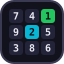
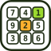
反應力5×5 格子照順序點到 25，計時看你要幾秒
18 週裡讀 paper、跑實驗、撐過 meeting，能不能投稿？
玩網站上的遊戲拿蘋果汁，餵牠長大、換造型
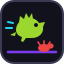
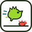
跑酷躲 bug、deadline、OOM，撿蘋果汁餵寵物
選不出來就轉一下，選項自己加
經典猜數字，附猜測紀錄
每人最多 3 子；已完整求解，先手必勝
9×8 重力棋盤，三段難度 AI
多帳號卡牌總表與交換配對
記電表讀數，算出每天、每月用電
100+ 題演算法解題紀錄（Notion）
在資料庫系統實驗室研究資料探勘。每個 Demo 都用同一份超商交易一步一步演給你看，Java / Python 程式碼逐行對照，也可以下載回去跑。
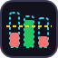
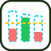
Two-Phase 高效益樣式先用 TWU 上界篩候選，再算真正的效益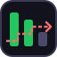
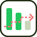
Top-k 高效益樣式不知道門檻設多少？直接要前 k 名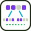
📄 FOTH：不用 join 的高效益樣式讀論文做的：IndexSet 自己拆出子集合（Inf. Sci. 2024）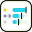
串流近似計數：Lossy Counting・Space-Saving記憶體不夠時，怎麼知道誰賣最多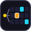
Count-Min Sketch用一格格計數器估次數，只會多算不會少算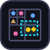
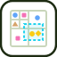
空間資料：四元樹與共位樣式哪幾種店總是開在彼此附近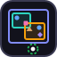
R-tree 與 kNN 查詢找最近的 k 家店，太遠的框不用打開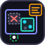
IR-tree 空間關鍵字查詢最近、又有賣咖啡和牛奶的店在哪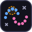
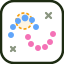
DBSCAN 密度分群不用先指定群數，月牙形也分得開每個 Demo 都附可直接執行的 Java 與 Python 程式碼，跟網頁上逐行高亮的是同一份。
Hi！我是果汁龍，目前是資料庫系統實驗室的碩一生。研究方向是資料探勘：從大量交易、時間序列與空間資料中，找出頻繁出現、高效益或具有週期性的樣式。
真實世界的資料庫一直在變，資料會新增、刪除，利潤也會浮動。我關心的是怎麼設計樹、清單或位元模式這類資料結構，加上剪枝策略，讓資料更新時不必整個重新掃描，也能有效率地維護探勘結果；另外也會接觸空間資料庫的索引與關鍵字查詢。
課堂與研究之外，我很喜歡自己動手做些小工具和小遊戲：記錄家裡電費的網頁、每天換一題的拼圖求解器、可以跟朋友連線對戰的卡牌遊戲……把遇到的小麻煩或好玩的點子做成真的能用的東西，是我最享受的事。
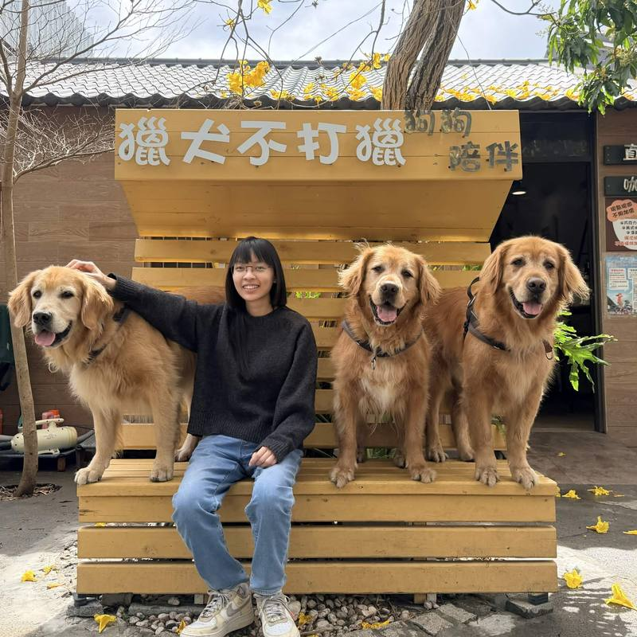